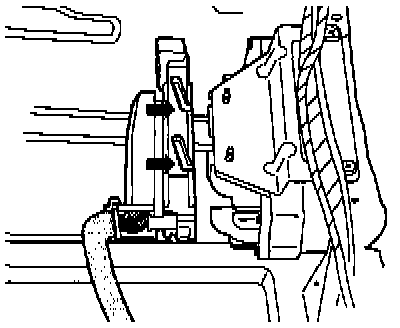

096 Transmission
TRANSMISSION ELECTRICAL TESTINGTesting Requirements:
- Battery Positive Voltage (B+) OK
- Fuses 14 (S14) and 21 (S21) OK
- Transmission Ground (GND) connections OK:
- Ground (GND) connection located on left next to relay panel
Check Ground connections for corrosion and poor contact; repair if necessary.
Check Battery Ground (GND) strap as well as Ground (GND) strap between Battery and transmission.
Testing Instructions
- Use the hand multimeter (Fluke 83, VAG 1526 or equivalent) for testing.
- Use auxiliary cables from the VAG 1594 adapter kit, and the test box as specified, for connecting test equipment.
CAUTION! To avoid damaging the electronic components, select the appropriate function and measurement range on the test equipment before connecting the test leads.
- The specified values are valid for ambient temperatures ranging from O - 40°C (32 - 104°F).
- If the measured values differ from the specified values, determine the cause by using the wiring diagrams.
- If the measured values differ only slightly from the specified values, clean the sockets and connectors of the test equipment and test leads, then repeat the test. Before replacing a particular component, test the wiring and connections and, particularly if specified values are below 10 ohms, repeat the resistance measurement.
Transmission Control Module Testing
- The Transmission Control Module (TCM) -J217- is located under the rear seat.

- Switch ignition OFF, release multi-pin connector lock in direction of -arrow-, then disconnect from control module.

- Connect VAG 1598/18 test box to multi-pin connector -1- and lock, moving in direction of -arrow-.
- Wiring to and from the 68-pin TCM connector can be checked according to the wiring diagram using the VAG 1598/18 test box.

After Electrical Checks:
- Re-connect multi-pin connector to TCM and lock.
NOTE: When re-connecting, make sure that the guides (-arrows-) are engaged with the TCM pins.